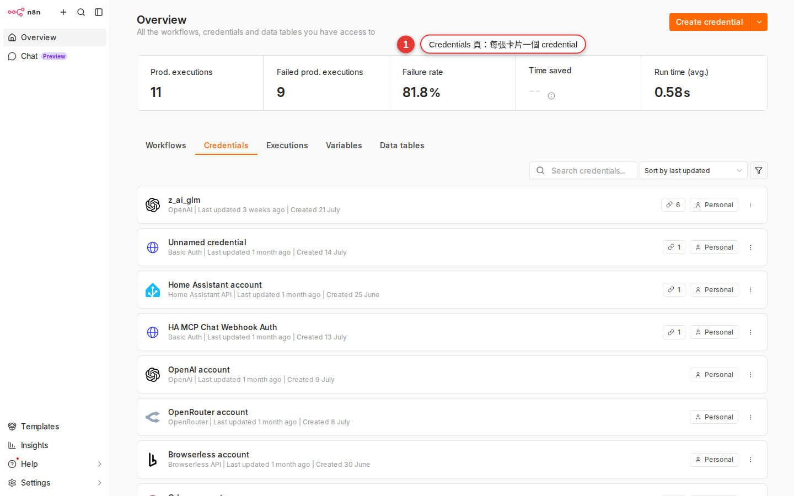

Credentials 管理：金鑰、OAuth、跟同事分享的界線
前面幾章你連 Slack、Gmail、Google Sheet 都串過了，但一直沒認真談：workflow 憑什麼可以「用你的身分」發訊息、讀郵件、寫試算表？答案是 credential——一組被 n8n 加密保管的帳號授權。這章教你怎麼建 OAuth 授權、怎麼貼 API key、跟同事分享有哪三種模式、backup 時千萬不能忘記帶走什麼。搞懂這章之後，你在公司才不會犯下「把老闆的 Slack token 用純文字貼進 workflow」這種災難。
為什麼要好好管 credential
你在第 11 章拉 Slack 節點的時候，一定被要求選一個「Credential to connect with」。那個下拉選單裡的東西就是 credential——n8n 幫你保管的一組 SaaS 帳號授權。沒有它，Slack 節點就算節點屬性全填對了，執行時還是會噴 Authentication failed。
可是 credential 這東西有點兩難：
- 如果不集中管：每條 workflow 各存一份 token，改密碼要改十幾次；同事一離職，你根本不知道他當初把 token 塞在哪。
- 如果全公司一份共用：只要有人手滑把 workflow 匯出成 JSON 分享，token 就外流。
- 如果沒 backup encryption key：伺服器搬家、災難還原之後，credential 資料還在但打不開——workflow 全部掛掉。
這章要解決三件事：（1）兩種 credential 型別（OAuth2 vs API Key）怎麼建；（2）跟同事分享有哪三種模式、每種的界線在哪；（3）credential 到底存在哪、加密機制怎麼運作、backup 時要一起帶走什麼。
Credential 到底是什麼
用一句話講：credential 是 n8n 幫你保管的「一組帳號授權資訊」，讓節點打外部服務時能自動拿出來用。可以想成瀏覽器的「密碼儲存」，但是給 workflow 用的。
三個關鍵性質——
- 存在 n8n 資料庫裡，不是存在你電腦，也不是存在 workflow JSON 檔裡。搬 workflow 到別台 n8n 需要重新綁定 credential。
- 加密儲存，用 n8n 實例的
N8N_ENCRYPTION_KEY環境變數加密。連你自己都看不到明文（只能看到 credential 名字跟型別）。 - User-level（建立者專屬）不是 workflow-level。你建的 credential 預設進入你的個人空間（personal space），別的登入者看不到；同一個帳號可以在多條 workflow、多個節點裡重複用同一份 credential。刪掉一份 credential，所有引用它的節點會全部變紅罷工。想跨人共用要走「Sharing」機制（見跟同事分享一節）。
Credentials 頁在哪？第 3 章已經帶你認過了——側欄最下面 Credentials（有些版本圖示是一把小鑰匙）。點進去會看到一張表，列出你這個 workspace 所有 credential：名字、型別、最後修改時間。

兩種 credential 型別
幾百個 credential 型別可以歸成兩類，認得這兩類就能打天下：
| 型別 | 怎麼授權 | 典型服務 | 設定難度 |
|---|---|---|---|
| OAuth2 | 按 Connect → 跳出去對方網站登入 → 點「允許」→ 回來自動拿到 token |
Google（Gmail / Sheet / Drive / Calendar）、Slack、GitHub、Notion、Microsoft 系列、HubSpot、Salesforce | 中（要有 Client ID/Secret；很多內建 credential 已預填） |
| API Key / Bearer Token | 去對方後台建一組 key → 直接複製貼進 n8n | OpenAI、Anthropic、Airtable、SendGrid、Stripe、Twilio、大部分開發者 API | 簡單（就一格 key 貼進去） |
還有兩種比較少見的變形，看到不要嚇到——
- Basic Auth：帳號密碼直接貼（舊的內部 API 常見，例如某些企業 LDAP）。
- Header Auth / Custom Auth：某些非標準 API 要在 header 塞特殊欄位，用這個彈性授權方式。用 HTTP Request 節點打野生 API 時最常搭這個。
實作：建一個 Google OAuth2 credential
最常見的情境——公司需要 workflow 讀寫 Google Sheet／寄 Gmail／存 Drive，全部都用同一組 Google OAuth2 credential 授權。走一次流程你就會了：
-
側欄 Credentials → New credential
點側欄的 Credentials，進去按右上角 Add credential（或空 workspace 中間的 Create new credential）。會跳出「Select credential type」的搜尋框。
-
搜尋 Google → 選對的 credential 型別
輸入
google，會出現一堆選項：Google OAuth2 API（通用）、Google Sheets OAuth2 API、Gmail OAuth2 API、Google Drive OAuth2 API…。原則是要用哪個節點就選哪個對應的 OAuth2 credential——雖然背後都是 Google OAuth，但 scope 不同。要 Gmail 節點就選Gmail OAuth2 API。 -
去 Google Cloud Console 建 OAuth Client（拿 Client ID/Secret）
如果是第一次建，n8n 會要你填 Client ID 跟 Client Secret——這兩個要去 console.cloud.google.com 建 OAuth 2.0 Client ID 拿。步驟：建 Project → APIs & Services → Credentials → Create Credentials → OAuth client ID → Web application → 把 n8n 顯示的 OAuth Redirect URL（類似
https://n8n.woowtech.io/rest/oauth2-credential/callback）貼進 Authorized redirect URIs → 儲存後拿到 Client ID / Secret。提示：Woow 內部 IT 已經建好共用 OAuth Client，直接找 IT 拿 Client ID / Secret 就好，不用自己開新 Project。共用的好處是統一管理 quota、統一收 audit log。 -
把 Client ID / Secret 貼進 n8n
回到 n8n 的 credential 表單，把剛剛 Google Console 拿到的 Client ID 貼進 Client ID 欄、Client Secret 貼進 Client Secret 欄。Scope 通常維持預設就好（每種 credential 型別預設 scope 已經是常用範圍——Gmail OAuth 預設含 send/read/labels，Sheets OAuth 預設含讀寫）。
-
按 Sign in with Google → 允許 → 拿到 token
右上角按 Sign in with Google（不同版本可能叫 Connect my account 或 OAuth2），會彈出新視窗跳到 Google 授權頁——選你的 Google 帳號 → 看到「n8n 想要存取你的 Gmail…」清單 → 按 Allow。彈窗關掉後 n8n 頁面就會顯示綠色勾勾與 Account connected。
-
命名並儲存
上方的 credential 名稱改成有辨識度的名字，例如
Gmail (marketing@woow.tw)，或Google Sheets - CS 團隊。按 Save。以後在 Gmail / Sheet / Drive 節點的 Credential 下拉裡就能選這個名字了。
實作：建一個 API Key credential（OpenAI 為例）
API Key 型別比 OAuth 簡單很多——沒有跳來跳去，就一個 key 貼進去而已。以 OpenAI 為例：
-
去 OpenAI 後台建 API Key
登入 platform.openai.com/api-keys，按 Create new secret key，取個名字（例如
n8n-woow-prod），選 All permissions（或依需求選 read-only）。建立完的 key 只會顯示一次——沒複製走就永遠拿不回來，要立刻貼到 n8n。 -
Credentials 頁 → New credential → 搜尋 OpenAI
回 n8n，側欄 Credentials → Add credential → 搜尋框打
openai，選 OpenAI。 -
把 API key 貼進去
只有一格 API Key，把剛剛複製的 key 貼進去。Organization ID 通常不用填（除非你屬於多個 OpenAI 組織要指定）。
-
命名並存檔
credential 名字改成
OpenAI (marketing team)之類。按 Save——大功告成，比 OAuth 快很多。
Connection tested successfully 才代表 auth 打得通；不代表 scope 夠——實跑才知道。Credential 跟 workflow 的關係
這是很多新手搞不清楚的地方——credential 跟 workflow 是兩個獨立的資源。理解這件事，你才會知道為什麼你搬 workflow 到別台伺服器時，credential 不會跟著跑。
| 問題 | credential | workflow |
|---|---|---|
| 存在哪裡？ | n8n 資料庫 credentials 表（加密） |
n8n 資料庫 workflow_entity 表 |
| 能匯出 JSON 嗎？ | Community 不建議（明文外流風險） | 可以（Ctrl+S 存檔 / 選單 Download） |
| 一份可以被幾個東西用？ | 一份 credential 可以被同一位使用者多條 workflow、多個節點重複用；跨使用者共用要看有沒有 Sharing / Project（Enterprise 才有） | 一條 workflow 可以引用多個不同 credential（例：讀 Sheet 用 A、傳 Slack 用 B） |
| 刪掉會怎樣？ | 所有引用它的節點會變紅（Credential ID not found） | 單獨刪掉不會影響 credential，credential 還在 |
換個角度看——n8n 資料庫其實可以想成兩張大表：一張存 credential（加密的 token 保險箱），一張存 workflow（節點結構圖）。workflow 的節點內部只存了「我用哪一個 credential ID」這個引用，實際的 token 值不在 workflow 檔案裡。
Credential 存哪裡、多安全
資訊部門常問的三個問題：存哪、加密怎麼做、backup 要帶什麼。一次講清楚：
-
存在 n8n 資料庫（credentials 表）
不管你 self-host 用 SQLite 還是 Postgres，credential 都會存在一張叫
credentials（或credentials_entity）的表裡。每一列一個 credential，欄位包含id、name、type、data——那個data就是加密過的 JSON blob（裡面裝 token / API key / OAuth refresh_token 等機敏值）。 -
加密用 N8N_ENCRYPTION_KEY 環境變數
n8n 啟動時會讀
N8N_ENCRYPTION_KEY這個環境變數作為對稱加密金鑰（底層是 crypto-js 的 AES）。credential 存進 DB 前會用這把 key 加密、讀出來時再解密。第一次啟動 n8n 如果沒設這個環境變數，n8n 會自動產生一把並寫進~/.n8n資料夾下的 settings 檔（實務上就是~/.n8n/config）——你之後絕對不能弄丟這把 key。queue mode 部署時務必手動設N8N_ENCRYPTION_KEY環境變數，且所有 worker 要用同一把值，否則 worker 解不開 credential。 -
Backup 時務必連 encryption key 一起帶走
備份 n8n 只 dump SQL 是沒用的——資料庫裡的 credential 全是密文，還原時如果新伺服器的 encryption key 不同，所有 credential 都變成打不開的垃圾，workflow 全部掛掉。正確做法：DB dump ＋
~/.n8n/config＋N8N_ENCRYPTION_KEY環境變數的值，三者一起保存。 -
連 Owner 也看不到明文
就算你是 workspace 的 Owner，進 credential 詳細頁也只會看到 token 欄位是空白（表示「已儲存」）或一排點點，看不到真實的值。這是刻意設計——避免內部人員（含管理員）意外或惡意複製 token 出去。要拿明文只能直接下 SQL 讀 DB＋用 encryption key 解密（需要 root 權限）。
N8N_ENCRYPTION_KEY commit 進 git、不要貼到 Slack、不要放 Notion 給人隨便看。這把 key 一旦洩漏，任何人拿到你的 DB dump 就能解出所有 credential。內部保存跟資料庫密碼、SSH private key 同等級對待。N8N_ENV_FEAT_ENCRYPTION_KEY_ROTATION=true，所有自架版本都能用）。開啟後 N8N_ENCRYPTION_KEY 變成保護內層 data key 的「主 key」，之後 UI Settings → Data Encryption Keys 可以旋轉內層 key，不用改 master key 就能定期換 credential 的加密金鑰。注意：這是單向設定，開了不能關，開之前務必先 backup DB。Credential 的日常生命週期
每個 credential 從建立到刪除，通常會經過這幾個階段。認完你以後管幾十個 credential 都游刃有餘：
| 階段 | 怎麼做 | 注意 |
|---|---|---|
| 建立 | Credentials 頁 → Add credential → 選型別 → 填欄位 → Save | 命名要有辨識度，加註屬於誰／團隊／環境 |
| 編輯 | Credentials 頁點 credential 名字 → 改欄位 → Save；或某節點紅色時點進去改 | 改完之後所有引用它的節點自動用新值，不用一個個改 |
| 測試 | credential 詳細頁右上 Test 按鈕（多數型別有；OAuth 是 Reconnect） | Test 通過只保證 auth 對，不保證 scope／權限對得起你要跑的節點 |
| Reconnect（OAuth 過期） | OAuth token refresh 失敗時，credential 會顯示紅色，按 Reconnect 重跑一次授權流程 | 大部分 OAuth 會自動 refresh，只有帳號密碼改過、scope 被吊銷、太久沒跑才需要手動 |
| 刪除 | Credentials 頁勾選 credential → Delete | 會影響所有引用它的 workflow——所有節點會變紅 Credential ID not found。刪之前先用「Usage」看哪些 workflow 在用 |
常見狀況排除
管 credential 早晚會踩到的坑，一次列給你：
-
OAuth 授權跳出去後回來還是沒登入
症狀：按了 Sign in with Google，彈窗跳到 Google 授權頁點了 Allow，回來 n8n 還是灰色沒綠勾勾。原因八成是 OAuth Redirect URI 沒設對——Google Console 的 Authorized redirect URIs 必須跟 n8n credential 頁面顯示的那串 URL 完全一致（含 https、含結尾斜線、含網域）。找 IT 部門對照兩邊，重新複製一次貼上。
-
Credential 突然過期不能用
OAuth 型別大部分時候 n8n 會自動 refresh token，你不會有感覺。但下列情境會 refresh 失敗需要手動 Reconnect：（1）對方帳號改過密碼；（2）Google 側手動撤銷了 app 授權；（3）refresh token 過期（Google 是 6 個月沒用就失效）；（4）OAuth Client Secret 在 Google Console 被 revoke。
-
節點紅色 Credential ID not found
兩種可能：（1）那個 credential 被別人刪掉了——重新建一份新的、把節點 credential 下拉重選；（2）你把 workflow 從 A n8n 匯出 JSON 匯到 B n8n，credential ID 對不上——同樣要在 B n8n 重建 credential 再重綁。這是 credential 跟 workflow 分家的必然代價。
-
Test 按鈕 401 / 403 錯誤
兩種可能：（1）API Key 型別——key 打錯了、少複製了一個字元、或 key 已在後台被 revoke；（2）OAuth 型別——scope 不夠（例如你選了
Google Sheets OAuth2但同一組 OAuth 授權沒勾 Drive 存取權限），要重新 Reconnect 一次並在 Google 頁面把所有需要的權限勾起來。 -
Test 按鈕通過但實際節點跑不了
Test 通常只做「打一個最簡單的 API 呼叫」驗證帳號活著（例：GET /me）——但你的節點要用進階操作（例：Slack 傳訊到私人頻道、Google Sheet 寫入被鎖定的表格），scope／權限可能不夠。這時 Test 通過但實跑會噴
insufficient_permissions，重新 Reconnect 並確認 scope 齊全。 -
還原 backup 後 credential 全部打不開
典型症狀：新伺服器 restore DB dump 完，所有 credential 顯示錯誤或直接無法解密。原因：N8N_ENCRYPTION_KEY 沒帶過來。解法：找到舊伺服器的 encryption key（在
~/.n8n/config或環境變數），設到新伺服器同名環境變數，重啟 n8n。這是最常見的還原災難，backup 策略要一開始就把 key 納入。 -
Credential 下拉裡看不到我剛建的
兩個原因：（1）credential 型別跟節點對不上——你在 Slack 節點裡是找不到 Gmail credential 的，因為 Slack 節點只吃
Slack API或Slack OAuth2；（2）你建 credential 那個 workspace 跟現在編輯 workflow 的 workspace 不同（Enterprise 才有 project 概念，Community 通常一個 workspace 就一份）。
常見問題
同事離職，他建的 credential 怎麼處理？
兩種情況都會踩坑：（1）Community 版 credential 都關在建立者的 personal space，離職員工帳號被停用後，那些 credential 也被鎖在裡面——所有引用它的 workflow 會全部變紅，得由 owner 進 DB 或用 CLI 把 credential ownership 轉出來，或直接重建；（2）Enterprise 有 Sharing / Project 概念，admin 可以在 Users 設定裡 transfer ownership 給接手的人。無論哪種，離職那天記得把他綁的 Gmail/Slack/API Key 都去 SaaS 後台重新授權或 revoke（換 token），避免他離職後還能透過舊 token 存取公司資料。
Credential 能匯出成 JSON 檔嗎？
Community 版不建議。理論上可以透過 n8n CLI（n8n export:credentials）匯出，但預設會是明文，token 直接暴露在檔案裡——放進 git 或分享出去就是資安事件。要匯出建議加 --decrypted=false 保持加密，並且只做 backup 用途，不要傳給別人。真的要跨 n8n 移轉 credential，最安全的作法是在新環境手動重建。
兩條 workflow 要用不同的 Slack account 怎麼辦？
建兩個 credential 就好。例如 Slack Bot - #ops-alerts（用 A 帳號）、Slack Bot - #marketing（用 B 帳號），兩條 workflow 的 Slack 節點各自在 Credential 下拉選對應的那份。同一個 workspace 底下建 100 個 Slack credential 都沒問題。
Test 按鈕通過但實際 workflow 跑不了，怎麼回事？
Test 通常只做最基本的 API 呼叫（例：/me 或 /ping），驗證帳號還活著。但你要跑的節點可能需要更進階的 scope／權限——例如 Slack 傳訊到 private channel 需要 chat:write.private scope、Google Sheet 寫入需要 spreadsheets scope 而不只是 spreadsheets.readonly。反過來也可能發生（Test 失敗但實跑 OK）——Test 對某些 API 不準，被 rate limit 擋住的話兩者結果會不一致。以實跑為準，Test 只是快速冒煙測試。
OAuth 跟 API Key 哪個安全？
能用 OAuth 就用 OAuth。原因：OAuth token 有時效（過期會自動 refresh 或失效）、可以在對方後台單方面撤銷、有 scope 限制（可以只給讀不能寫）；API Key 通常長期有效、權限一給就全給、要 revoke 得手動去對方後台。少數服務（OpenAI、Anthropic）只提供 API Key，那沒辦法只能用 API Key，但務必做到：（1）幫 key 命名有辨識度；（2）定期輪替（例：3 個月換一次）；（3）能限 IP 就限 IP。
Backup n8n 時只 dump DB 夠嗎？
不夠。一定要一起備份 N8N_ENCRYPTION_KEY。不然還原完 credential 全變成解不開的密文，所有 workflow 掛掉。Woow 內部標準 backup 流程：（1）Postgres/SQLite DB dump；（2）~/.n8n/config 檔（含 encryption key）；（3）環境變數清單（也可能有 encryption key）；（4）~/.n8n/binaryData/ 檔案附件目錄。四樣一起才是完整 backup。細節看附錄 A · 設定速查與附錄 B · 常見錯誤排錯。
可以把 API key 寫在 Code node 裡嗎？
絕對不要。Code node 內容是明文存進 workflow JSON，任何有 workflow 讀取權限的人都看得到；一旦有人匯出 workflow 分享，key 就跟著外流。正確做法：建一個 Header Auth 或 HTTP Custom Auth credential 把 key 存進去，Code node 或 HTTP Request 節點透過 credential 引用。這樣 key 保持加密，Code node 內容也可以放心分享。
Community 版有 per-user credential 隔離嗎？共用怎麼辦？
反過來——Community 版預設就是完全隔離：每個使用者建的 credential 都在自己的 personal space，別人看不到、也選不到。缺的其實是共用機制：想跟同事分享一份 marketing 帳號的 Gmail credential，Community 做不到（沒 Sharing tab、沒 Project）。實務上小團隊要不就大家共用同一個 n8n 使用者登入（不理想）、要不就每個人各自重建自己的一份。要「既隔離、又能選擇性共用」必須升 Enterprise（Sharing + Projects + RBAC）或用 n8n Cloud Pro / Enterprise（內建 Sharing）。
Credential 官方文件在哪查？
三個地方：（1）總覽 docs.n8n.io/credentials/；（2）OAuth 設定細節 docs.n8n.io/hosting/configuration/oauth/；（3）Sharing 與權限管理 docs.n8n.io/user-management/rbac/。每種 credential 型別（Gmail OAuth2、Slack API、OpenAI…）另外都有各自的頁面說要填什麼欄位。
下一章要學什麼？
第 14 章講 Expression——節點欄位怎麼寫 {{ $json.field }} 抓上一個節點的資料。有了 credential 打得通、Expression 又會抓資料，你的 workflow 就從「照抄別人的」進化到「能組出自己想要的」。